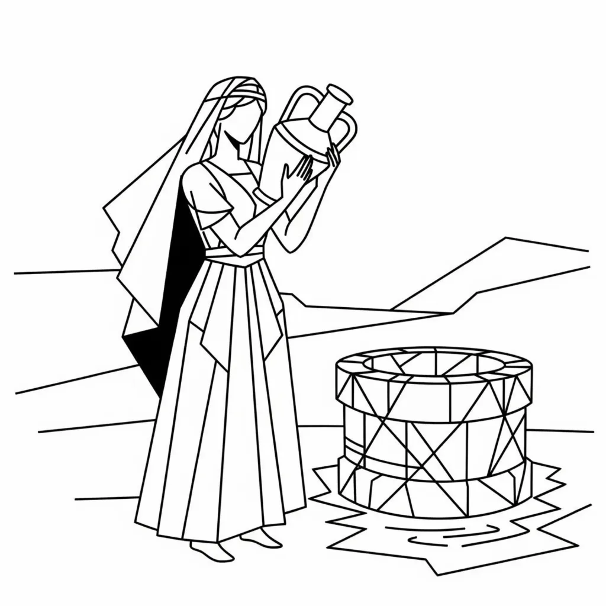

Genesis 24 is usually read as a story about Abraham’s servant finding a wife for Isaac, but read psychologically it becomes a precise illustration of how a new identity is established and stabilised. Abraham, the servant, Rebekah, and Isaac represent coordinated movements within consciousness when a new state is chosen and brought into lived experience.
The narrative also fulfils the pattern set earlier in Genesis 2:24 — the movement of the mind toward unity.
“A man shall leave his father and mother and cleave unto his wife, and they shall become one flesh.”
This is not social instruction but structural instruction. “The man” (Genesis 1:26) represents present awareness. “The wife” represents the state selected. To leave is to detach from inherited identity; to cleave is to sustain identification with the chosen state until it becomes “one flesh” — one continuous experience of being.
Why Not a Canaanite Woman? Understanding Abraham’s Warning
Abraham’s warning not to take a wife from the daughters of Canaan symbolises that a new identity cannot be fused with old conditioning. “Canaan” represents patterns shaped by external circumstance — the already-formed self.
This reinforces Genesis 2:24. The bride must arise from within — from the seed of the state itself, not from reactions to the outer world.
For this cause will a man go away from his father and his mother and be joined to his wife; and they will be one flesh. – Genesis 2:24
You cannot unite a new “I AM” with an old self-definition. The correspondence must match the identity being assumed.
Rebekah as Eve and the Inner Correspondence
“This is now bone of my bones and flesh of my flesh.” — Genesis 2:23
Rebekah plays the same symbolic role as Eve. She is not an external addition but a correspondence. Isaac represents the selected identity. Rebekah represents the inward form that mirrors it. When she appears, it signals that the new identity has taken root deeply enough to produce an equal reflection.
“Bone of my bones” describes recognition of sameness — not attraction, but identity alignment.
Abraham Sends His Servant: Faith and the Seed of Desire
“Abraham said to his servant, ‘You will go to my country and to my relatives and take a wife for my son Isaac.’” (Genesis 24:4)
Abraham represents the originating conviction — the seed of desire accepted as valid. The servant represents the movement of that conviction into inner activity. The journey outward mirrors an inward search for a state that matches what has already been chosen.
Notice that Isaac does not travel. The identity remains fixed. The movement happens within.
The Well: The Inner Source of Living Water
“You are a garden locked up, my sister, my bride; you are a spring enclosed, a sealed fountain.” — Song of Solomon 4:12
The well represents depth — the level beneath surface thought. It is the point where defined intention meets latent possibility.
Rebekah appears before the servant finishes speaking. This detail is structural. When a position is clearly accepted inwardly, the matching correspondence surfaces naturally.
Her “virginity” symbolises untouched potential — a state not yet shaped by prior identification.
The Prayer and the Sign: The Law in Motion
The servant’s prayer is specific. It defines the quality required.
“O Lord, God of my master Abraham, give me success today... Make the woman who answers my prayer the one you have chosen for Isaac.” (Genesis 24:12–14)
Rebekah’s response — watering both the servant and the camels — demonstrates overflow. Camels carry burdens across deserts; watering them symbolises sustaining the entire journey, not merely the moment. When the chosen state is correct, it supports the whole structure of life, not a single desire.
Rebekah and Isaac: The Inner Marriage of Identity and Expression
“Isaac brought her into the tent of his mother Sarah... and she became his wife.” (Genesis 24:67)
The tent represents interior life. Sarah, whose name implies authority and continuity, represents the prior established state. Rebekah entering that tent signals replacement and succession. The new identity takes its place within the structure of self.
This is the completion of Genesis 2:24 — leaving prior identification and cleaving until the new state becomes the governing experience.
The Rivers of Eden and the Flow of Imaginative Power
The rivers of Eden in Genesis 2 symbolise the ever flowing stream of consciousness branching into expression. The well in Genesis 24 is a concentrated access point to that same flow — the moment a selected identity begins to take form.
The Repetition of the Story: The Servant’s Double Recounting
“And the servant told Isaac all the things that he had done.” (Genesis 24:66)
The servant recounts the story twice — first to Rebekah’s family, then to Isaac. Repetition here signals stabilisation. A state is strengthened through continued identification.
This mirrors the pattern seen in the fourfold Gospel structure and the principle of identical harvest: what is consistently maintained reproduces after its kind.
Conclusion: The Structural Pattern of Genesis 24
Genesis 24 reveals coordinated movement within consciousness: originating conviction (Abraham), inward activity (the servant), depth encounter (the well), and correspondence (Rebekah) aligning with chosen identity (Isaac).
The pattern is consistent: define the state, detach from incompatible identity, sustain identification, and allow the matching correspondence to emerge. When awareness and selected identity remain unified, the “marriage” is complete — not as event, but as established being.
About The Author | Brides at the Well | Genesis 2:24 Series | Law of Identical Harvest | Rebekah Series | Women in the Bible Series